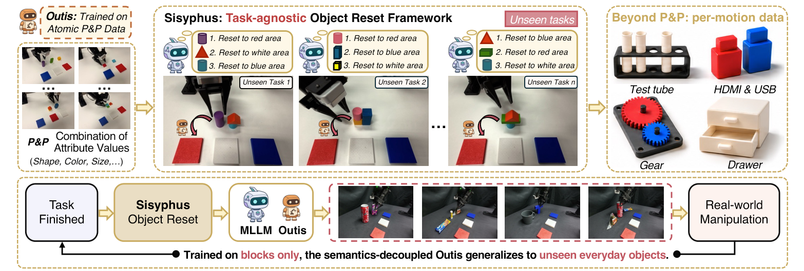
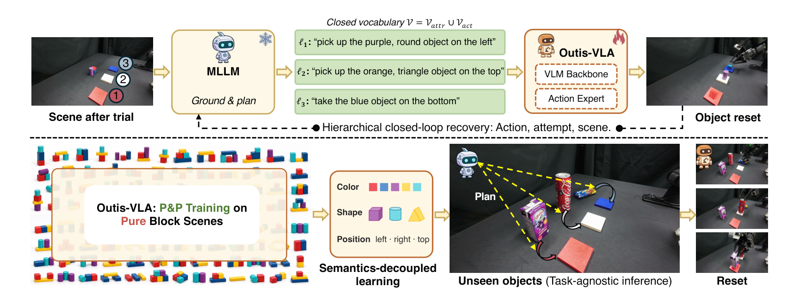

Sisyphus
never stops.
Task-agnostic object reset toward unattended real-robot manipulation
Anonymous authors
Every real-robot trial leaves objects out of place, and a person has to put them back. Sisyphus does it instead: an MLLM decides which object goes where and describes it by colour, shape and position, and Outis-VLA, trained only on blocks, moves it.
On five held-out block scenes it needs 1.29 attempts per object, against 2.95 for the strongest baseline.
“One must imagine Sisyphus happy.” Albert Camus, The Myth of Sisyphus. Sisyphus had gravity to roll his boulder back down for free. In the lab, a human carries it.
Key observation

A reset takes only a few kinds of motion, and a name says which object, not how.
A trial changes the scene through the objects it moves, so undoing it takes only a few types of motion. Across 150 tasks in RoboTwin 2.0, RoboDojo and LIBERO, pick-and-place alone resets 78% of them, and adding extraction from a fixture brings that to 85%.
Within one motion type, the object's category tells you which object to move. How to move it depends on where it is and its coarse shape, and the policy can see both. Today's VLAs tie the two together in one open-vocabulary instruction, so an unseen name is out of distribution even when the motion is familiar.
Sisyphus separates the roles. The MLLM never names an object. An unseen soda can reaches the policy as a new combination of attribute values it already knows:
Hardest motion a task's reset needs · 150 benchmark tasks
- Pick-and-place 78.0
- Extraction 6.7
- Articulated 8.7
- No reset 3.3
- Insertion 1.3
- Irreversible 1.3
- Deformable 0.7
Method
The MLLM decides what and where. Outis-VLA, trained only on blocks, decides how. A closed loop catches what goes wrong.

Select, ground, describe
Picks an out-of-place object and a free region, grounds both in 3D, and writes an attribute instruction.
Execute, with a noise search
A π0.5 policy post-trained on attribute instructions. Of five sampled noises it runs the one that ends closest to the target.
Check at three levels
Action: abort a wrong grasp. Attempt: verify the placement. Scene: repair knocked-out objects.
Blocks only
Pick-and-place is learned from block scenes alone.
Attributes, not names
Instructions give colour, shape and position, never the object's name.
Unseen objects, same words
The same attribute words describe a mug or a can, so the policy resets objects it has never seen.
Real-robot demos · 6-DoF YAM arm, one fixed RGB-D camera, one wrist camera
On the table
Each video starts from the scene a trial left behind.
Results · Sisyphus-Bench
How many tries does a reset take, and who finishes it?
Tries-to-Reset (TTR) is the mean number of attempts per object. Attempts are capped at three, and a reset that needs a human is charged the full cap, so TTR runs from 1 (everything placed first try) to 3 (a human finished every reset).
- First pass
- Retry
- Human
Block scenes, per scene
Three blocks must each return to their own coloured region. 25 resets per scene. Sisyphus uses no demonstrations from these scenes. Each square is one reset, grouped by how it ended. SR: first-pass success (%). Time: seconds per reset. Int.: resets that needed a human.
Full table: SR, time, interventions
| Side-by-Side | Twin-Tower | Three-Pillars | Bridge | Totem | Average | |||||||||||||
|---|---|---|---|---|---|---|---|---|---|---|---|---|---|---|---|---|---|---|
| Method | SR | Time | Int. | SR | Time | Int. | SR | Time | Int. | SR | Time | Int. | SR | Time | Int. | SR | Time | Int. |
| AutoEval | 0.0 | 236.6 | 25 | 0.0 | 209.0 | 25 | 0.0 | 174.5 | 25 | 0.0 | 252.3 | 25 | 0.0 | 212.1 | 25 | 0.0 | 216.9 | 25.0 |
| MP Skill | 12.0 | 93.3 | 22 | 0.0 | 104.0 | 25 | 0.0 | 86.2 | 25 | 0.0 | 66.8 | 25 | 0.0 | 111.5 | 25 | 2.4 | 92.4 | 24.4 |
| HALTER | 0.0 | 85.2 | 25 | 0.0 | 109.6 | 25 | 0.0 | 218.2 | 25 | 0.0 | 117.2 | 25 | 0.0 | 121.4 | 25 | 0.0 | 130.3 | 25.0 |
| Sisyphus | 80.0 | 189.8 | 5 | 84.0 | 200.0 | 4 | 88.0 | 163.6 | 3 | 92.0 | 170.9 | 2 | 80.0 | 184.6 | 4 | 84.8 | 181.8 | 3.6 |
MP Skill shares Sisyphus's MLLM, goal specification and closed loop and differs only in the executor, so the gap lies in how a decision is turned into motion. The baselines' shorter times come from resets that stop early for a human.
Extraction and unseen objects
Outis-VLA has only ever extracted an HDMI connector, and has only ever picked up blocks. Each square is one reset, grouped by how it ended: 25 per extraction task, 5 per everyday object.
Full tables
| USB stick | Test tube | |||||||
|---|---|---|---|---|---|---|---|---|
| Method | SR | Time | Int. | TTR | SR | Time | Int. | TTR |
| MP Skill | 0.0 | 140.7 | 22 | 2.88 | 40.0 | 85.9 | 15 | 2.20 |
| HALTER | 0.0 | 167.3 | 22 | 3.00 | 32.0 | 115.7 | 8 | 2.12 |
| Sisyphus | 92.0 | 71.8 | 0 | 1.16 | 100.0 | 70.0 | 0 | 1.00 |
| Unseen object | Described as | SR | Int. | TTR |
|---|---|---|---|---|
| Mug | blue + cylinder | 100.0 | 0 | 1.00 |
| Soft-pack drink | purple + bar | 100.0 | 0 | 1.00 |
| Rice ball | blue + triangle | 80.0 | 1 | 1.40 |
| Packaged bread | blue + bar | 60.0 | 2 | 1.80 |
| Soda can | red + cylinder | 60.0 | 2 | 1.80 |
| All everyday objects | 80.0 | 5 | 1.40 |
What each part contributes
Ablations on the block scenes. They use smaller subsets, so the full model's numbers differ slightly from the main table.